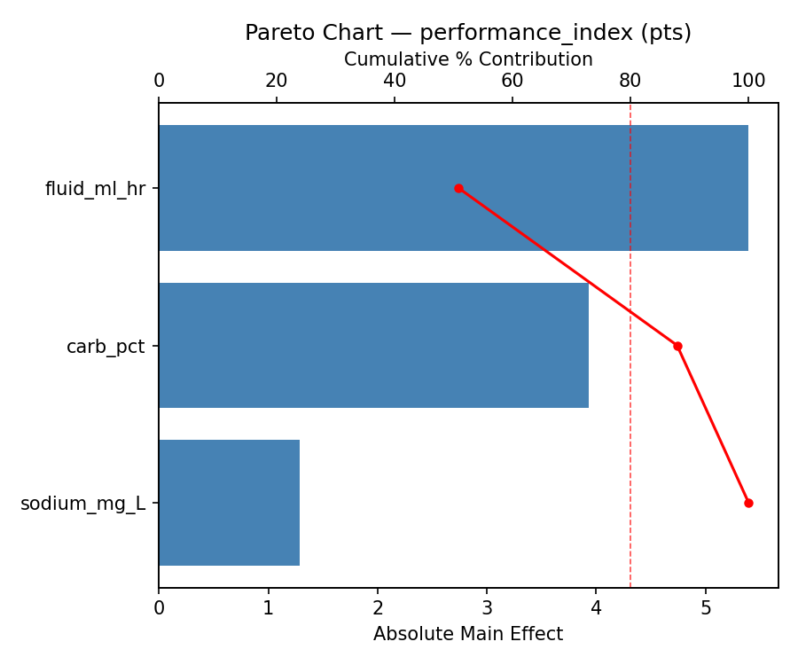
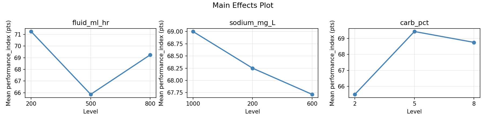
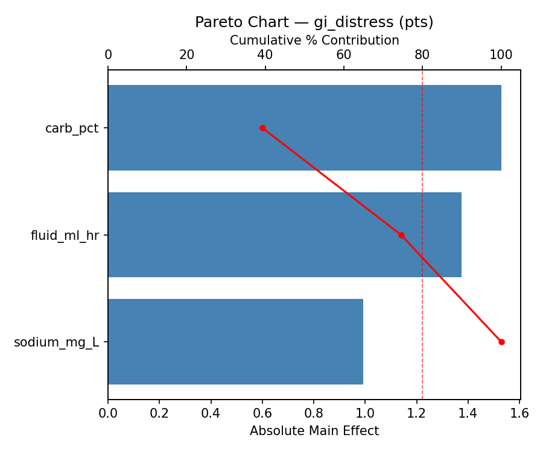
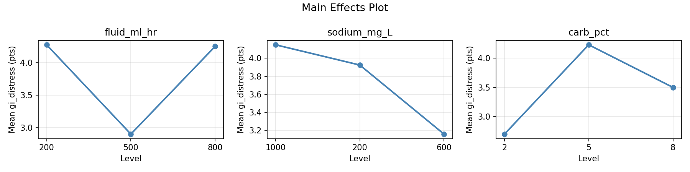
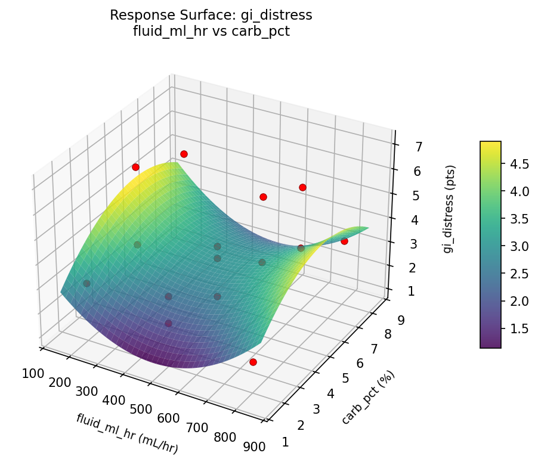
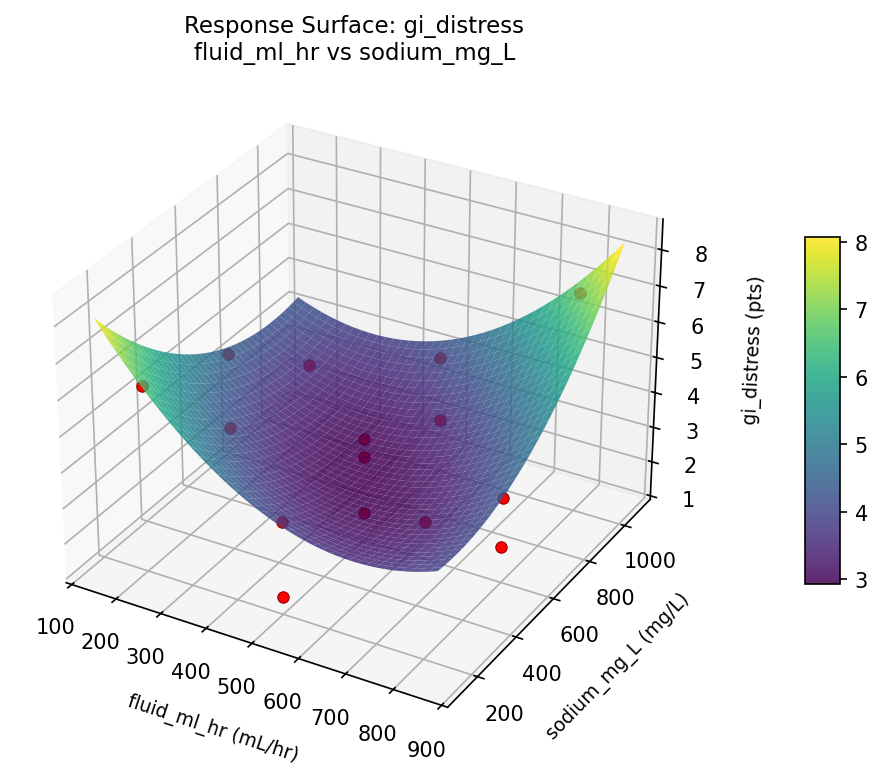
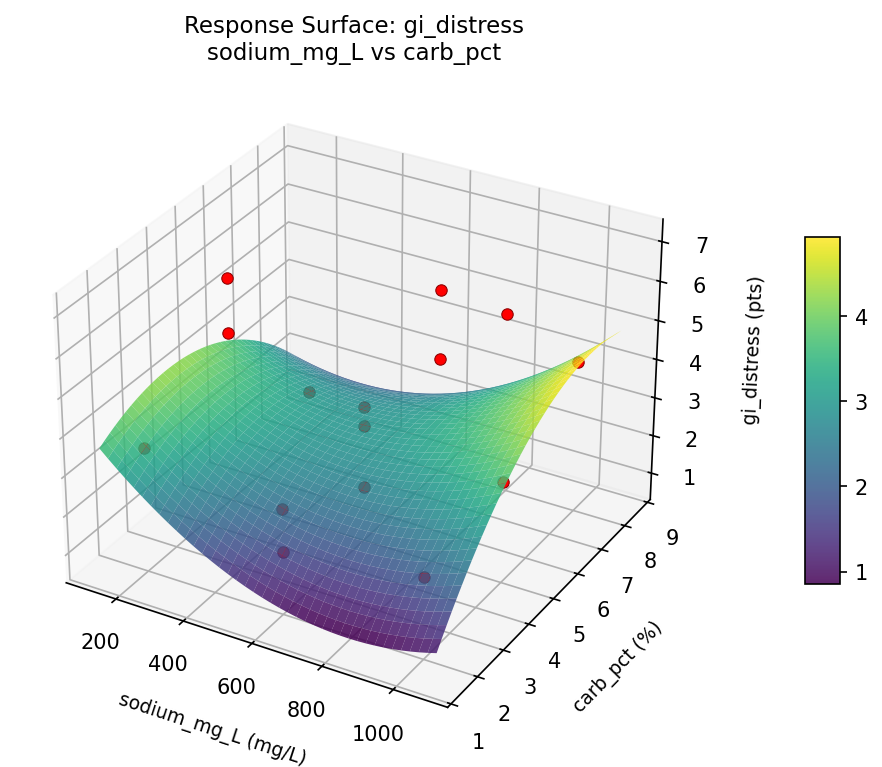
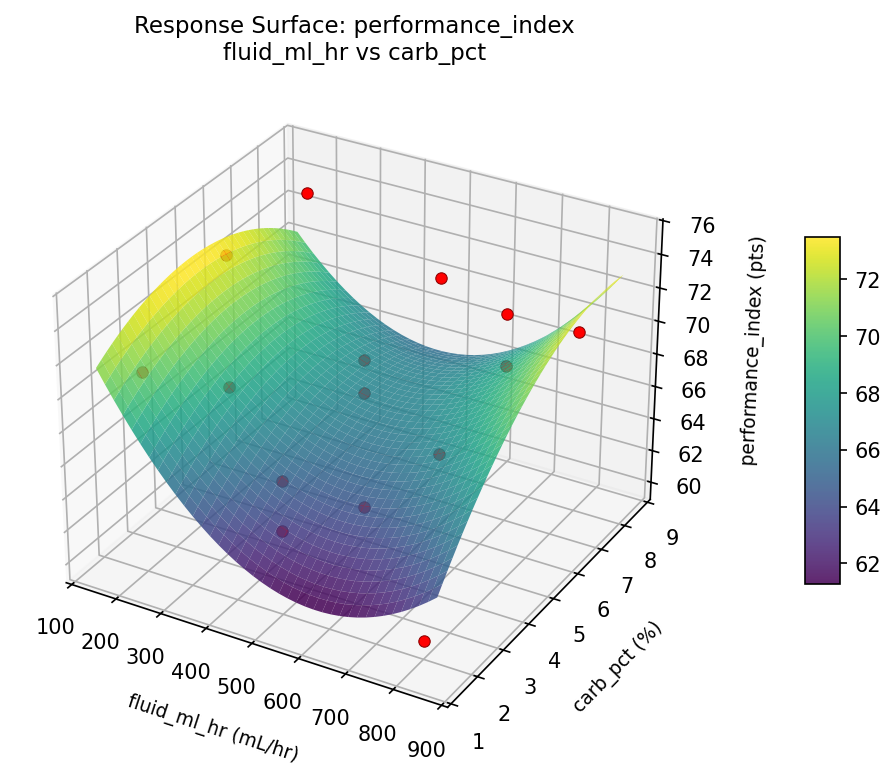
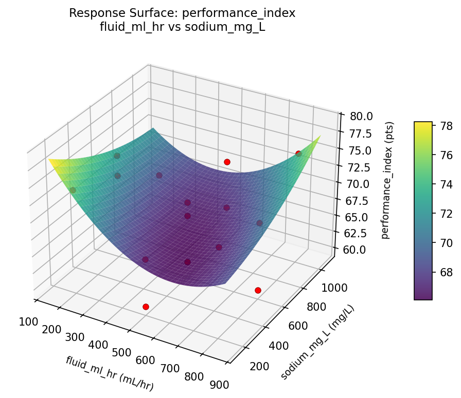
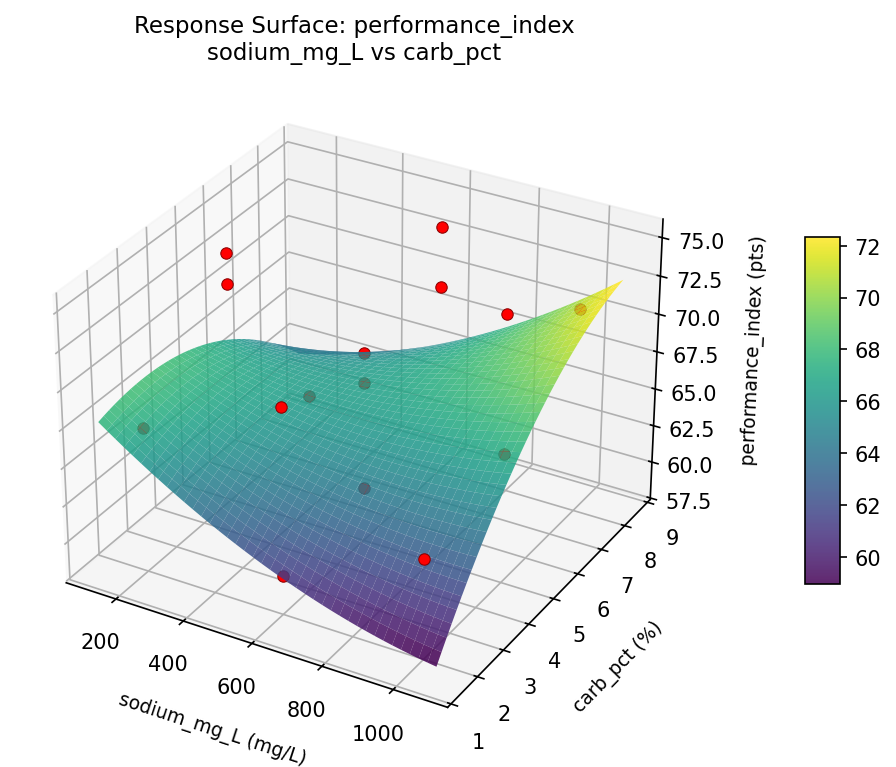

Summary
This experiment investigates athletic hydration strategy. Box-Behnken design to maximize endurance performance and minimize GI distress by tuning fluid intake rate, electrolyte concentration, and carbohydrate percentage.
The design varies 3 factors: fluid ml hr (mL/hr), ranging from 200 to 800, sodium mg L (mg/L), ranging from 200 to 1000, and carb pct (%), ranging from 2 to 8. The goal is to optimize 2 responses: performance index (pts) (maximize) and gi distress (pts) (minimize). Fixed conditions held constant across all runs include exercise type = marathon_training, ambient temp = 25C.
A Box-Behnken design was chosen because it efficiently fits quadratic models with 3 continuous factors while avoiding extreme corner combinations — requiring only 15 runs instead of the 8 needed for a full factorial at two levels.
Quadratic response surface models were fitted to capture potential curvature and factor interactions. The RSM contour plots below visualize how pairs of factors jointly affect each response.
Key Findings
For performance index, the most influential factors were fluid ml hr (46.1%), carb pct (36.5%), sodium mg L (17.4%). The best observed value was 75.0 (at fluid ml hr = 500, sodium mg L = 200, carb pct = 8).
For gi distress, the most influential factors were carb pct (39.1%), fluid ml hr (35.5%), sodium mg L (25.5%). The best observed value was 1.4 (at fluid ml hr = 500, sodium mg L = 600, carb pct = 5).
Recommended Next Steps
- Run confirmation experiments at the predicted optimal settings to validate the model.
- Consider whether any fixed factors should be varied in a future study.
Experimental Setup
Factors
| Factor | Low | High | Unit |
|---|
fluid_ml_hr | 200 | 800 | mL/hr |
sodium_mg_L | 200 | 1000 | mg/L |
carb_pct | 2 | 8 | % |
Fixed: exercise_type = marathon_training, ambient_temp = 25C
Responses
| Response | Direction | Unit |
|---|
performance_index | ↑ maximize | pts |
gi_distress | ↓ minimize | pts |
Configuration
{
"metadata": {
"name": "Athletic Hydration Strategy",
"description": "Box-Behnken design to maximize endurance performance and minimize GI distress by tuning fluid intake rate, electrolyte concentration, and carbohydrate percentage"
},
"factors": [
{
"name": "fluid_ml_hr",
"levels": [
"200",
"800"
],
"type": "continuous",
"unit": "mL/hr"
},
{
"name": "sodium_mg_L",
"levels": [
"200",
"1000"
],
"type": "continuous",
"unit": "mg/L"
},
{
"name": "carb_pct",
"levels": [
"2",
"8"
],
"type": "continuous",
"unit": "%"
}
],
"fixed_factors": {
"exercise_type": "marathon_training",
"ambient_temp": "25C"
},
"responses": [
{
"name": "performance_index",
"optimize": "maximize",
"unit": "pts"
},
{
"name": "gi_distress",
"optimize": "minimize",
"unit": "pts"
}
],
"settings": {
"operation": "box_behnken",
"test_script": "use_cases/112_hydration_strategy/sim.sh"
}
}
Experimental Matrix
The Box-Behnken Design produces 15 runs. Each row is one experiment with specific factor settings.
| Run | fluid_ml_hr | sodium_mg_L | carb_pct |
|---|
| 1 | 500 | 200 | 2 |
| 2 | 500 | 600 | 5 |
| 3 | 800 | 600 | 8 |
| 4 | 800 | 600 | 2 |
| 5 | 500 | 600 | 5 |
| 6 | 500 | 600 | 5 |
| 7 | 200 | 600 | 8 |
| 8 | 800 | 200 | 5 |
| 9 | 500 | 200 | 8 |
| 10 | 800 | 1000 | 5 |
| 11 | 200 | 600 | 2 |
| 12 | 500 | 1000 | 8 |
| 13 | 200 | 200 | 5 |
| 14 | 200 | 1000 | 5 |
| 15 | 500 | 1000 | 2 |
Step-by-Step Workflow
1
Preview the design
$ python doe.py info --config use_cases/112_hydration_strategy/config.json
2
Generate the runner script
$ python doe.py generate --config use_cases/112_hydration_strategy/config.json \
--output use_cases/112_hydration_strategy/results/run.sh --seed 42
3
Execute the experiments
$ bash use_cases/112_hydration_strategy/results/run.sh
4
Analyze results
$ python doe.py analyze --config use_cases/112_hydration_strategy/config.json
5
Get optimization recommendations
$ python doe.py optimize --config use_cases/112_hydration_strategy/config.json
6
Multi-objective optimization
With 2 competing responses, use --multi to find the best compromise via Derringer–Suich desirability.
$ python doe.py optimize --config use_cases/112_hydration_strategy/config.json --multi
7
Generate the HTML report
$ python doe.py report --config use_cases/112_hydration_strategy/config.json \
--output use_cases/112_hydration_strategy/results/report.html
Features Exercised
| Feature | Value |
|---|
| Design type | box_behnken |
| Factor types | continuous (all 3) |
| Arg style | double-dash |
| Responses | 2 (performance_index ↑, gi_distress ↓) |
| Total runs | 15 |
Analysis Results
Generated from actual experiment runs using the DOE Helper Tool.
Response: performance_index
Top factors: fluid_ml_hr (46.1%), carb_pct (36.5%), sodium_mg_L (17.4%).
Pareto Chart

Main Effects Plot

Response: gi_distress
Top factors: carb_pct (39.1%), fluid_ml_hr (35.5%), sodium_mg_L (25.5%).
Pareto Chart

Main Effects Plot

Response Surface Plots
3D surfaces fitted with quadratic RSM. Red dots are observed data points.
gi distress fluid ml hr vs carb pct

gi distress fluid ml hr vs sodium mg L

gi distress sodium mg L vs carb pct

performance index fluid ml hr vs carb pct

performance index fluid ml hr vs sodium mg L

performance index sodium mg L vs carb pct

Multi-Objective Optimization
When responses compete, Derringer–Suich desirability finds the best compromise.
Each response is scaled to a 0–1 desirability, then combined via a weighted geometric mean.
Overall Desirability
D = 0.7070
Per-Response Desirability
| Response | Weight | Desirability | Predicted | Dir |
|---|
performance_index |
1.5 |
|
71.00 0.7121 71.00 pts |
↑ |
gi_distress |
1.0 |
|
3.00 0.6994 3.00 pts |
↓ |
Recommended Settings
| Factor | Value |
|---|
fluid_ml_hr | 500 mL/hr |
sodium_mg_L | 1000 mg/L |
carb_pct | 2 % |
Source: from observed run #2
Trade-off Summary
Sacrifice = how much worse than single-objective best.
| Response | Predicted | Best Observed | Sacrifice |
|---|
gi_distress | 3.00 | 1.40 | +1.60 |
Top 3 Runs by Desirability
| Run | D | Factor Settings |
|---|
| #5 | 0.6515 | fluid_ml_hr=800, sodium_mg_L=200, carb_pct=5 |
| #6 | 0.6515 | fluid_ml_hr=800, sodium_mg_L=1000, carb_pct=5 |
Model Quality
| Response | R² | Type |
|---|
gi_distress | 0.6962 | quadratic |
Full Multi-Objective Output
============================================================
MULTI-OBJECTIVE OPTIMIZATION
Method: Derringer-Suich Desirability Function
============================================================
Overall desirability: D = 0.7070
Response Weight Desirability Predicted Direction
---------------------------------------------------------------------
performance_index 1.5 0.7121 71.00 pts ↑
gi_distress 1.0 0.6994 3.00 pts ↓
Recommended settings:
fluid_ml_hr = 500 mL/hr
sodium_mg_L = 1000 mg/L
carb_pct = 2 %
(from observed run #2)
Trade-off summary:
performance_index: 71.00 (best observed: 75.00, sacrifice: +4.00)
gi_distress: 3.00 (best observed: 1.40, sacrifice: +1.60)
Model quality:
performance_index: R² = 0.1478 (linear)
gi_distress: R² = 0.6962 (quadratic)
Top 3 observed runs by overall desirability:
1. Run #2 (D=0.7070): fluid_ml_hr=500, sodium_mg_L=1000, carb_pct=2
2. Run #5 (D=0.6515): fluid_ml_hr=800, sodium_mg_L=200, carb_pct=5
3. Run #6 (D=0.6515): fluid_ml_hr=800, sodium_mg_L=1000, carb_pct=5
Full Analysis Output
=== Main Effects: performance_index ===
Factor Effect Std Error % Contribution
--------------------------------------------------------------
fluid_ml_hr 6.8929 1.3100 46.1%
carb_pct 5.4643 1.3100 36.5%
sodium_mg_L 2.6071 1.3100 17.4%
=== ANOVA Table: performance_index ===
Source DF SS MS F p-value
-----------------------------------------------------------------------------
fluid_ml_hr 2 134.0429 67.0214 1.811 0.2245
sodium_mg_L 2 17.7929 8.8964 0.240 0.7918
carb_pct 2 76.2214 38.1107 1.030 0.3999
Lack of Fit 6 58.3429 9.7238 0.263 0.9143
Pure Error 2 74.0000 37.0000
Error 8 132.3429 37.0000
Total 14 360.4000 25.7429
=== Summary Statistics: performance_index ===
fluid_ml_hr:
Level N Mean Std Min Max
------------------------------------------------------------
200 4 63.2500 3.5940 60.0000 68.0000
500 7 70.1429 5.2735 60.0000 75.0000
800 4 69.7500 2.6300 66.0000 72.0000
sodium_mg_L:
Level N Mean Std Min Max
------------------------------------------------------------
1000 4 69.7500 5.5603 64.0000 75.0000
200 4 68.5000 5.8023 61.0000 74.0000
600 7 67.1429 4.9809 60.0000 71.0000
carb_pct:
Level N Mean Std Min Max
------------------------------------------------------------
2 4 68.0000 6.0553 60.0000 74.0000
5 7 66.2857 4.8550 60.0000 72.0000
8 4 71.7500 3.3040 68.0000 75.0000
=== Main Effects: gi_distress ===
Factor Effect Std Error % Contribution
--------------------------------------------------------------
carb_pct 2.1321 0.4150 39.1%
fluid_ml_hr 1.9357 0.4150 35.5%
sodium_mg_L 1.3893 0.4150 25.5%
=== ANOVA Table: gi_distress ===
Source DF SS MS F p-value
-----------------------------------------------------------------------------
fluid_ml_hr 2 9.6633 4.8316 2.365 0.1560
sodium_mg_L 2 5.6733 2.8366 1.388 0.3037
carb_pct 2 11.9172 5.9586 2.916 0.1119
Lack of Fit 6 4.8290 0.8048 0.394 0.8411
Pure Error 2 4.0867 2.0433
Error 8 8.9156 2.0433
Total 14 36.1693 2.5835
=== Summary Statistics: gi_distress ===
fluid_ml_hr:
Level N Mean Std Min Max
------------------------------------------------------------
200 4 2.4500 0.9469 1.7000 3.8000
500 7 4.3857 1.9030 1.4000 7.1000
800 4 3.4750 0.8342 2.9000 4.7000
sodium_mg_L:
Level N Mean Std Min Max
------------------------------------------------------------
1000 4 4.3750 2.1624 2.4000 7.1000
200 4 4.0000 1.8655 1.7000 6.1000
600 7 2.9857 1.0024 1.4000 4.2000
carb_pct:
Level N Mean Std Min Max
------------------------------------------------------------
2 4 3.3750 1.3301 1.9000 5.1000
5 7 2.9429 1.2259 1.4000 4.7000
8 4 5.0750 1.8191 3.3000 7.1000
Optimization Recommendations
=== Optimization: performance_index ===
Direction: maximize
Best observed run: #3
fluid_ml_hr = 500
sodium_mg_L = 200
carb_pct = 8
Value: 75.0
RSM Model (linear, R² = 0.2463, Adj R² = 0.0407):
Coefficients:
intercept +68.2000
fluid_ml_hr -2.3750
sodium_mg_L -0.6250
carb_pct +2.2500
RSM Model (quadratic, R² = 0.7477, Adj R² = 0.2937):
Coefficients:
intercept +62.3333
fluid_ml_hr -2.3750
sodium_mg_L -0.6250
carb_pct +2.2500
fluid_ml_hr*sodium_mg_L +1.5000
fluid_ml_hr*carb_pct +0.2500
sodium_mg_L*carb_pct +1.7500
fluid_ml_hr^2 +2.0833
sodium_mg_L^2 +3.0833
carb_pct^2 +5.8333
Curvature analysis:
carb_pct coef=+5.8333 convex (has a minimum)
sodium_mg_L coef=+3.0833 convex (has a minimum)
fluid_ml_hr coef=+2.0833 convex (has a minimum)
Notable interactions:
sodium_mg_L*carb_pct coef=+1.7500 (synergistic)
fluid_ml_hr*sodium_mg_L coef=+1.5000 (synergistic)
Predicted optimum (from quadratic model, at observed points):
fluid_ml_hr = 500
sodium_mg_L = 1000
carb_pct = 8
Predicted value: 74.6250
Surface optimum (via L-BFGS-B, quadratic model):
fluid_ml_hr = 200
sodium_mg_L = 200
carb_pct = 8
Predicted value: 78.0833
Model quality: Good fit — general trends are captured, some noise remains.
Factor importance:
1. carb_pct (effect: 7.7, contribution: 49.4%)
2. fluid_ml_hr (effect: 4.8, contribution: 30.4%)
3. sodium_mg_L (effect: 3.1, contribution: 20.1%)
=== Optimization: gi_distress ===
Direction: minimize
Best observed run: #13
fluid_ml_hr = 500
sodium_mg_L = 600
carb_pct = 5
Value: 1.4
RSM Model (linear, R² = 0.3147, Adj R² = 0.1278):
Coefficients:
intercept +3.6267
fluid_ml_hr -0.3875
sodium_mg_L -0.4125
carb_pct +1.0500
RSM Model (quadratic, R² = 0.7610, Adj R² = 0.3308):
Coefficients:
intercept +2.2667
fluid_ml_hr -0.3875
sodium_mg_L -0.4125
carb_pct +1.0500
fluid_ml_hr*sodium_mg_L +0.6000
fluid_ml_hr*carb_pct -0.3750
sodium_mg_L*carb_pct +0.0750
fluid_ml_hr^2 -0.0083
sodium_mg_L^2 +0.6917
carb_pct^2 +1.8667
Curvature analysis:
carb_pct coef=+1.8667 convex (has a minimum)
sodium_mg_L coef=+0.6917 convex (has a minimum)
fluid_ml_hr coef=-0.0083 negligible curvature
Notable interactions:
fluid_ml_hr*sodium_mg_L coef=+0.6000 (synergistic)
fluid_ml_hr*carb_pct coef=-0.3750 (antagonistic)
Predicted optimum (from quadratic model, at observed points):
fluid_ml_hr = 500
sodium_mg_L = 200
carb_pct = 8
Predicted value: 6.2125
Surface optimum (via L-BFGS-B, quadratic model):
fluid_ml_hr = 800
sodium_mg_L = 549.649
carb_pct = 4.46518
Predicted value: 1.7989
Model quality: Good fit — general trends are captured, some noise remains.
Factor importance:
1. carb_pct (effect: 2.9, contribution: 62.2%)
2. sodium_mg_L (effect: 1.0, contribution: 21.1%)
3. fluid_ml_hr (effect: 0.8, contribution: 16.8%)